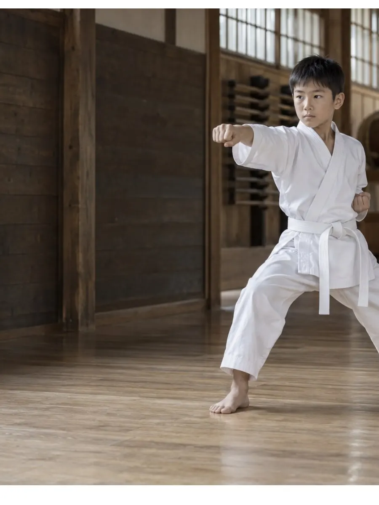

師範 ／ 四段
たかはし 師範
指導歴22年。「礼ができれば、技はあとからついてくる」が口ぐせです。幼年クラスは必ずこの人が見ます。
背筋を伸ばす。相手の目を見る。
心を込めて、一礼する。
空手の学びは、技だけではありません。
できないことに向き合う勇気。
ともに学ぶ仲間を、思いやる気持ち。
昨日の自分より、ほんの少し前へ。
その小さな積み重ねを、私たちは大切にします。
挨拶から育つ、相手を敬う心。
比べるのは、昨日の自分。
支え合う仲間が、力になる。
同じ道場で、同じ礼から。学年が上がると、稽古の中身が変わります。

空手道KARATE正座、礼、立ち方から。突きと受けを、遊びのように繰り返します。泣いてしまう日は、隣で見ているだけで大丈夫です。
基本の型「平安初段」を一年かけて。帯の色が変わる昇級審査に、はじめて挑みます。
型と組手。大会に出るかどうかは、本人と相談して決めます。出ない選択も、同じ稽古です。
少年クラス60分の流れです。毎回同じ順番なので、小さい子も先が分かって動けます。
道場に一礼して入り、正座で心を静めます。
足首から順に。柔軟は毎回少しずつ伸ばします。
突き・受け・蹴りを号令で。指導者が横について直します。
級ごとの型を、ひとりずつ。できたところを言葉にします。
正座で今日をふりかえり、一礼して終わります。
昇級審査は年に2回、道場で行います。受ける・受けないは、本人と相談して決めます。
全員が公認段位を持ち、救命講習を毎年受けています。
指導歴22年。「礼ができれば、技はあとからついてくる」が口ぐせです。幼年クラスは必ずこの人が見ます。
この道場の卒業生。全国大会に3度出ました。型の細かい直しと、大会に出たい子の相談役です。
※ 見本のため写真は入れていません。本番では指導者の写真を縦位置で入れます。
大会の日の送迎も、できる方だけで回しています。
道場の後ろに椅子があります。送って、そのまま帰っていただいても大丈夫です。
体験は動きやすい服で。続けると決めてから、道場でまとめて注文します（11,000円前後）。
月2回まで、他の曜日に振替できます。前日までにLINEで一言ください。
少年上級から。ヘッドギア・拳サポーターは道場のものを使います。
全員が加入（年会費に含む）。道場の中と、行き帰りが対象です。
表示はすべて税込です。曜日は都合に合わせて選べます。
| クラス | 曜日・時間 | 月謝 |
|---|---|---|
| 幼年年中〜年長 | 火・土45分 | 6,600円 |
| 少年小1〜小3 | 水・土60分 | 7,700円 |
| 少年上級小4〜中3 | 木・土75分 | 8,800円 |
2年目からは月謝・年会費・受ける場合の審査料のみ。やめるときの違約金はありません。
年中で入って、最初の2か月は正座もできませんでした。師範が毎回隣に座ってくれて、いまは道場に入るとき自分から一礼しています。
年長男子の母道着代と審査料を、入る前に紙で見せてもらえたのが大きかったです。あとから追加のお願いが来たことは一度もありません。
小2女子の父大会に出ない選択をしましたが、稽古の扱いは何も変わりませんでした。本人はいま、緑帯をめざしています。
小5男子の母大丈夫です。在籍の8割が、ここがはじめての習い事です。正座と礼から始めます。
幼年と少年クラスは組手をしません。少年上級から、防具をつけて、指導者が間に入って行います。
動きやすい服と飲み物だけです。道着は続けると決めてからで大丈夫です。裸足で稽古します。
本人と相談して決めます。出ない子もいます。出ない選択をしても、稽古の内容は変わりません。
通っています。各クラスに数人ずつ在籍しています。着替えは別の部屋を使います。
道場は1階です。裸足で稽古するので、床は毎回拭いています。
VISIT & EXPERIENCE
見学と体験は、何回でも無料です。持ち物は動きやすい服と飲み物だけ。保護者の方は後ろの椅子で見ていてください。